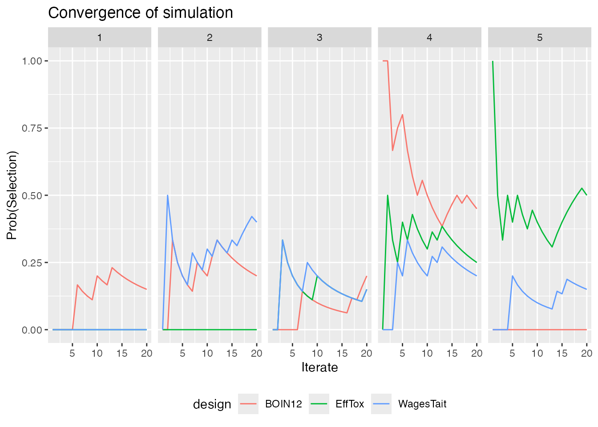

vignettes/A310-EfficacyToxicity.Rmd
A310-EfficacyToxicity.RmdSeamless phase I/II designs extend the typical phase I or maximum tolerated dose-seeking approach by incorporating efficacy outcomes into the dose selection decision. Researchers will be motivated to escalate dose whilst there is a lack of efficacy and de-escalate under the presence of excess toxicity.
One of the earliest designs in this space was EffTox by P. F. Thall and Cook (2004). Their design uses
logit models for the probability of toxicity and efficacy at the
research doses, and allows the two events to be correlated in a joint
model. Wages and Tait (2015) introduced a
multi-stage design that uses response-adaptive randomisation to explore
the doses. Most recently, Lin et al.
(2020) introduced a generalisation of the BOIN Bayesian interval
design for efficacy and toxicity outcomes called BOIN12. These designs
are implemented in escalation and demonstrated below.
First, we must learn how to specify efficacy and toxicity outcomes in
escalation. We do that in the next section.
In a joint phase I/II trial, where we have coincident efficacy and toxicity outcomes, we present outcomes in the individual patients using the letters:
T to show that toxicity without efficacy occurred in a
patient;E to show that efficacy without toxicity occurred in a
patient;N to show that neither occurred;B to show that both occurred.These outcome letters are strewn behind dose-levels to show the outcomes of patients in cohorts. To show that a cohort a three patients was given dose 2, with the first experiencing toxicity without efficacy, the second experiencing efficacy without toxicity, and the third experiencing both, we would use the outcome string:
outcomes <- '2TEB'There are many more examples below.
Thall & Cook (P. F. Thall and Cook 2004) introduced the EffTox design for dose-finding clinical trials where both efficacy and toxicity events guide dose selection decisions. We provide a brief recap of EffTox here, but full details are given in (P. F. Thall and Cook 2004; P. Thall, Cook, and Estey 2006; P. Thall et al. 2014).
For doses , the authors define codified doses using the transform
The codified doses are used as the explanatory variables in logit models for the marginal probabilities of toxicity and efficacy:
Let be random variables each taking values representing the presence of efficacy and toxicity in patient .
Then the efficacy and toxicity events are associated by the joint probability function
.
Normal priors are specified for the elements of the parameter vector .
At each dose update decision, the dose is acceptable if
and
and is no more than than one position below the lowest dose-level given and no more than one position above the highest dose-level given. The net effect of these last two criteria is that untried doses may not be skipped in escalation or de-escalation. are provided by the user as the trial scenario dictates.
The utility of dose , with efficacy and toxicity is
where is calculated to intersect the points , and in the efficacy-toxicity plain. We refer to these as hinge points but that is not common nomenclature.
At the dose selection decision, the dose-level from the acceptable set with maximal utility is selected to be given to the next patient or cohort. If there are no acceptable doses, the trial stops and no dose is recommended.
There are several published EffTox examples, including explanations and tips on parameter choices (P. F. Thall and Cook 2004; P. Thall, Cook, and Estey 2006; P. Thall et al. 2014).
The design of Wages and Tait (2015) uses latent CRM models to estimate the probabilities of toxicity and efficacy, and two stages to identify the recommended dose. In the first stage, the design sequentially seeks the dose with probability of toxicity nearest to an upper toxicity threshold, like the classic CRM approach. In the second stage, the design adaptively randomises to the permissible doses, i.e. those with probability of toxicity not considered statistically too toxic, with greater randomisation weight given to those doses with higher estimated efficacy rates. The design uses a toxicity skeleton, like CRM, and several competing efficacy skeletons to accommodate that efficacy may not be monotonically increasing in dose.
The Bayesian Optimal Interval (BOIN) design was introduced by Liu and Yuan (2015). It is one of a series of dose-finding trial designs that works by partitioning the probability of toxicity into a set of intervals. These designs make dose-selection decisions that are determined by the interval in which the probability of toxicity for the current dose is believed to reside. The BOIN12 generalisation applies similar logic to co-primary binary toxicity and efficacy outcomes.
escalation
To demonstrate the methods, let us consider the recommended dose
after observing outcomes 1NNN 2EBT seeking a dose no more
toxic than 0.3 with an associated efficacy probability of at least
0.5.
In each design, there will be many parameters that need to be set because these designs are comparatively complex. Ordinarily, parameter choices would be justified in light of the prevailing clinical scenario, and evaluated by simulation. For the purposes of illustration in this document, however, we are going to proceed with typical or general values.
library(escalation)
outcomes <- "1NNN 2EBT"For simplicity, we will use the parametersiation specified in an example investigating five doses in P. Thall et al. (2014):
p <- trialr::efftox_priors(
alpha_mean = -7.9593, alpha_sd = 3.5487,
beta_mean = 1.5482, beta_sd = 3.5018,
gamma_mean = 0.7367, gamma_sd = 2.5423,
zeta_mean = 3.4181, zeta_sd = 2.4406,
eta_mean = 0, eta_sd = 0.2,
psi_mean = 0, psi_sd = 1
)
real_doses = c(1.0, 2.0, 4.0, 6.6, 10.0)
num_doses <- length(real_doses)
et_model <- get_trialr_efftox(
real_doses = real_doses,
efficacy_hurdle = 0.5, toxicity_hurdle = 0.3,
p_e = 0.1, p_t = 0.1,
eff0 = 0.5, tox1 = 0.65,
eff_star = 0.7, tox_star = 0.25,
priors = p,
# Low MCMC sample size purely for speed in vignette:
iter = 1000, chains = 1, seed = 2020
)
et_fit
#> Patient-level data:
#> # A tibble: 6 × 5
#> Patient Cohort Dose Tox Eff
#> <int> <int> <int> <int> <int>
#> 1 1 1 1 0 0
#> 2 2 1 1 0 0
#> 3 3 1 1 0 0
#> 4 4 2 2 0 1
#> 5 5 2 2 1 1
#> 6 6 2 2 1 0
#>
#> Dose-level data:
#> # A tibble: 6 × 12
#> dose tox eff n empiric_tox_rate mean_prob_tox median_prob_tox
#> <ord> <dbl> <dbl> <dbl> <dbl> <dbl> <dbl>
#> 1 NoDose 0 0 0 0 0 0
#> 2 1 0 0 3 0 0.171 0.123
#> 3 2 2 2 3 0.667 0.298 0.273
#> 4 3 0 0 0 NaN 0.503 0.516
#> 5 4 0 0 0 NaN 0.583 0.699
#> 6 5 0 0 0 NaN 0.620 0.811
#> # ℹ 5 more variables: empiric_eff_rate <dbl>, mean_prob_eff <dbl>,
#> # median_prob_eff <dbl>, admissible <lgl>, recommended <lgl>
#>
#> The model uses a toxicity limit of 0.3.
#> The model uses an efficacy limit of 0.5.
#> The model advocates continuing at dose 3.
recommended_dose(et_fit)
#> [1] 3
continue(et_fit)
#> [1] TRUE
dose_admissible(et_fit)
#> [1] FALSE TRUE TRUE FALSE FALSEFor simplicity we will use the parametersiation specified in Wages and Tait (2015), tweaked slightly to reflect the dose-levels and targets specified in the EffTox example above.
tox_skeleton = c(0.08, 0.15, 0.22, 0.29, 0.36)
eff_skeletons = matrix(nrow = 9, ncol = num_doses)
eff_skeletons[1,] <- c(0.60, 0.50, 0.40, 0.30, 0.20)
eff_skeletons[2,] <- c(0.50, 0.60, 0.50, 0.40, 0.30)
eff_skeletons[3,] <- c(0.40, 0.50, 0.60, 0.50, 0.40)
eff_skeletons[4,] <- c(0.30, 0.40, 0.50, 0.60, 0.50)
eff_skeletons[5,] <- c(0.20, 0.30, 0.40, 0.50, 0.60)
eff_skeletons[6,] <- c(0.30, 0.40, 0.50, 0.60, 0.60)
eff_skeletons[7,] <- c(0.40, 0.50, 0.60, 0.60, 0.60)
eff_skeletons[8,] <- c(0.50, 0.60, 0.60, 0.60, 0.60)
eff_skeletons[9,] <- c(0.60, 0.60, 0.60, 0.60, 0.60)
eff_skeleton_weights = rep(1, nrow(eff_skeletons))
wt_model <- get_wages_and_tait(
tox_skeleton = tox_skeleton,
eff_skeletons = eff_skeletons,
tox_limit = 0.3, eff_limit = 0.5,
num_randomise = 20
)The toxicity skeleton specified above plays exactly the equivalent role as seen in the CRM design. There are several efficacy skeletons to allow that efficacy may not be monotonic in dose. We use efficacy skeletons to reflect that: i) each dose may be the maximum, with monotonic increase and subsequent decrease relative to that dose; and ii) that each dose may be a plateau point, with equal efficacy at higher doses. In general, this generates efficacy skeletons in a trial of doses. The probabilities in the efficacy skeletons are less important than the shape the skeleton conveys because the average height of the dose-efficacy curve will be adjusted in Bayesian updating.
We fit the model to the outcomes:
and see that a dose is advised for the next cohort:
recommended_dose(wt_fit)
#> [1] 1
continue(wt_fit)
#> [1] TRUENote that this design differs from EffTox in which doses it infers to be admissible. Different designs behave in different ways!
dose_admissible(wt_fit)
#> [1] TRUE FALSE FALSE FALSE FALSEUncommonly seen in dose-finding designs, this design is a randomising design:
is_randomising(wt_fit)
#> [1] TRUEDoses are assigned to patients in the first trial stage in a non-randomising way (i.e. the same outcomes fit to the same design will yield the same recommended dose). In contrast, doses are randomised in the second trial stage correlated to the modelled efficacy probability at each dose.
For illustration, we use the parameterisation presented and justified in Liu and Yuan (2015).
b_model <- get_boin12(
num_doses = 5, phi_t = 0.3, phi_e = 0.5, u2 = 40, u3 = 60, n_star = 6
)We fit the model to outcomes using the usual method:
And we can obtain the usual information as presented in many places in these vignettes:
recommended_dose(b_fit)
#> [1] 1
continue(b_fit)
#> [1] TRUE
dose_admissible(b_fit)
#> [1] FALSE TRUE TRUE FALSE FALSEUnlike EffTox and Wages & Tait, the BOIN12 design performs an additional step at the final dose recommendation to select the dose that is finally recommended. This same approach is used in BOIN and mTIP2, for instance. Read on.
BOIN12, like some other designs, selects the final dose differently
to how it selects doses mid-trial. To achieve this in
escalation, we need an extra selector that will kick-in
when the parent selector(s) have selected a non-NA dose but expressed
continue == FALSE, i.e. signaled the trial ends now but
we are interested in a dose. If used, it will almost surely come
last in the selector chain:
b_model2 <- get_boin12(
num_doses = 5, phi_t = 0.3, phi_e = 0.5, u2 = 40, u3 = 60, n_star = 6
) %>%
stop_at_n(n = 12) %>%
select_boin12_obd()
outcomes <- '1NNN 2NTN 2NNN 3BEN'
b_model2 %>% fit(outcomes) %>% recommended_dose()
#> [1] 3Note we have forced the maximum sample size to 12 and provided
outcomes for 12 patients so that the logic of
select_boin12_obd is invoked.
In the above example, stop_at_n stopped the trial
because the threshold sample size was met, and the underlying algorithm
identified that at least one dose was worthy of selection. At this
juncture, select_boin12_obd took over and applied the
method described by the authors. Whilst the underlying selector(s) were
busy conducting the trial (continue == TRUE),
select_boin12_obd kept silent.
As with all designs in escalation, we can use dose-paths
to exhaustively calculate model advice for all possible future cohorts.
However, first, a note of warning.
In phase 1/2 trials, there are four outcomes each patient may experience (listed above), so there are 10 distinct combinations of outcomes that a cohort of two patients may yield (n.b. we are counting combinations rather than permutations), and 20 combinations that a cohort of three may yield. This means that the size of a dose-path tree grows very quickly, so we must be modest in our aspirations here lest we be overwhelmed with information!
For example, after observing 1NN in an initial cohort of
two patients, we will reproduce the dose-advice for the next two cohorts
of two patients (i.e. 100 paths). For comparison, we will specify that
the next dose will be 2. This starts the designs from a common place.
Naturally, this option can be omitted and the design would start from
whatever dose it recommended after seeing outcomes 1NN.
To visualise paths for the EffTox design, we run:
cohort_sizes <- c(2, 2)
outcomes <- "1NN"
et_paths <- et_model %>%
get_dose_paths(
cohort_sizes = cohort_sizes,
previous_outcomes = outcomes,
next_dose = 2
)
#> You have requested 100 paths. Be patient.
graph_paths(et_paths)Had there been no previous outcomes (i.e. at the start of a new
trial), we could have omitted the previous_outcomes
parameter.
We can visualise the equivalent using the Wages & Tait design:
wt_paths <- wt_model %>%
get_dose_paths(
cohort_sizes = cohort_sizes,
previous_outcomes = outcomes,
next_dose = 2
)
#> You have requested 100 paths. Be patient.
graph_paths(wt_paths)and the BOIN12 design:
b_paths <- b_model %>%
get_dose_paths(
cohort_sizes = cohort_sizes,
previous_outcomes = outcomes,
next_dose = 2
)
#> You have requested 100 paths. Be patient.
graph_paths(b_paths)As we might expect, we see distinct differences in the dose decisions by design. EffTox will escalate in this example much more readily.
For more information on working with dose-paths, refer to the dose-paths vignette.
We can simulate trials using all designs in escalation.
Computation using Bayesian designs can be computationally costly so for
the purposes of illustration in this vignette, we will simulate just
twenty trials per design at the following true toxicity and efficacy
curves:
n_sim <- 20
true_prob_tox = c(0.02, 0.12, 0.17, 0.38, 0.55)
true_prob_eff = c(0.25, 0.27, 0.52, 0.54, 0.54)To promote comparability, we will give each design just 12 patients (again, just for illustration) and prevent each design from skipping doses in escalation.
To simulate under the EffTox design, we run:
et_model <- get_trialr_efftox(
real_doses = real_doses,
efficacy_hurdle = 0.5, toxicity_hurdle = 0.3,
p_e = 0.1, p_t = 0.1,
eff0 = 0.5, tox1 = 0.65,
eff_star = 0.7, tox_star = 0.25,
priors = p,
# Low MCMC sample size purely for speed in vignette:
iter = 2000, chains = 1,
) %>%
dont_skip_doses() %>%
stop_at_n(n = 12)
set.seed(2025)
et_sims <- et_model %>%
simulate_trials(
num_sims = n_sim,
true_prob_tox = true_prob_tox,
true_prob_eff = true_prob_tox
)
et_sims
#> Number of iterations: 20
#>
#> Number of doses: 5
#>
#> True probability of toxicity:
#> 1 2 3 4 5
#> 0.02 0.12 0.17 0.38 0.55
#>
#> True probability of efficacy:
#> 1 2 3 4 5
#> 0.02 0.12 0.17 0.38 0.55
#>
#> Probability of recommendation:
#> NoDose 1 2 3 4 5
#> 0.10 0.00 0.00 0.05 0.35 0.50
#>
#> Probability of administration:
#> 1 2 3 4 5
#> 0.253 0.253 0.291 0.203 0.000
#>
#> Sample size:
#> Min. 1st Qu. Median Mean 3rd Qu. Max.
#> 9.00 12.00 12.00 11.85 12.00 12.00
#>
#> Total toxicities:
#> Min. 1st Qu. Median Mean 3rd Qu. Max.
#> 0.0 1.0 2.0 2.1 3.0 5.0
#>
#> Total efficacies:
#> Min. 1st Qu. Median Mean 3rd Qu. Max.
#> 0.00 1.00 2.00 1.85 3.00 4.00
#>
#> Trial duration:
#> Min. 1st Qu. Median Mean 3rd Qu. Max.
#> 5.844 8.951 9.953 10.759 12.937 22.432And under the Wages & Tait design:
wt_model <- get_wages_and_tait(
tox_skeleton = tox_skeleton,
eff_skeletons = eff_skeletons,
tox_limit = 0.3, eff_limit = 0.5,
num_randomise = 20
) %>%
dont_skip_doses() %>%
stop_at_n(n = 12)
set.seed(2025)
wt_sims <- wt_model %>%
simulate_trials(
num_sims = n_sim,
true_prob_tox = true_prob_tox,
true_prob_eff = true_prob_tox
)
wt_sims
#> Number of iterations: 20
#>
#> Number of doses: 5
#>
#> True probability of toxicity:
#> 1 2 3 4 5
#> 0.02 0.12 0.17 0.38 0.55
#>
#> True probability of efficacy:
#> 1 2 3 4 5
#> 0.02 0.12 0.17 0.38 0.55
#>
#> Probability of recommendation:
#> NoDose 1 2 3 4 5
#> 0.15 0.10 0.35 0.25 0.10 0.05
#>
#> Probability of administration:
#> 1 2 3 4 5
#> 0.1972 0.3239 0.2958 0.1549 0.0282
#>
#> Sample size:
#> Min. 1st Qu. Median Mean 3rd Qu. Max.
#> 3.00 12.00 12.00 10.65 12.00 12.00
#>
#> Total toxicities:
#> Min. 1st Qu. Median Mean 3rd Qu. Max.
#> 0.00 1.00 2.00 1.75 2.25 5.00
#>
#> Total efficacies:
#> Min. 1st Qu. Median Mean 3rd Qu. Max.
#> 0.00 1.00 1.50 1.65 2.00 5.00
#>
#> Trial duration:
#> Min. 1st Qu. Median Mean 3rd Qu. Max.
#> 0.3197 6.5617 11.1565 11.0194 13.9553 19.9895And under the BOIN12 design:
b_model <- get_boin12(
num_doses = 5, phi_t = 0.3, phi_e = 0.5, u2 = 40, u3 = 60, n_star = 6
) %>%
dont_skip_doses() %>%
stop_at_n(n = 12) %>%
select_boin12_obd()
set.seed(2025)
b_sims <- b_model %>%
simulate_trials(
num_sims = n_sim,
true_prob_tox = true_prob_tox,
true_prob_eff = true_prob_tox
)
b_sims
#> Number of iterations: 20
#>
#> Number of doses: 5
#>
#> True probability of toxicity:
#> 1 2 3 4 5
#> 0.02 0.12 0.17 0.38 0.55
#>
#> True probability of efficacy:
#> 1 2 3 4 5
#> 0.02 0.12 0.17 0.38 0.55
#>
#> Probability of recommendation:
#> NoDose 1 2 3 4 5
#> 0.00 0.20 0.10 0.35 0.35 0.00
#>
#> Probability of administration:
#> 1 2 3 4 5
#> 0.250 0.263 0.263 0.225 0.000
#>
#> Sample size:
#> Min. 1st Qu. Median Mean 3rd Qu. Max.
#> 12 12 12 12 12 12
#>
#> Total toxicities:
#> Min. 1st Qu. Median Mean 3rd Qu. Max.
#> 1.00 1.00 2.00 1.95 2.25 4.00
#>
#> Total efficacies:
#> Min. 1st Qu. Median Mean 3rd Qu. Max.
#> 0.00 1.00 2.00 2.15 3.00 5.00
#>
#> Trial duration:
#> Min. 1st Qu. Median Mean 3rd Qu. Max.
#> 6.619 9.554 10.885 11.179 12.384 16.512To compare designs, however, it is much more efficient to use the
method presented in Sweeting et al. (2024)
using simulate_compare:
designs <- list(
EffTox = et_model,
WagesTait = wt_model,
BOIN12 = b_model
)
sims <- simulate_compare(
designs = designs,
num_sims = n_sim,
true_prob_tox = true_prob_tox,
true_prob_eff = true_prob_tox
)
#> Running BOIN12
#> Running EffTox
#> Running WagesTait
convergence_plot(sims)
We stress again, the design parameters in these examples have been chosen in haste merely for illustration. The work presented here in no way constitutes a valid comparison of these three designs.
For more information on running dose-finding simulations, refer to the simulation vignette.